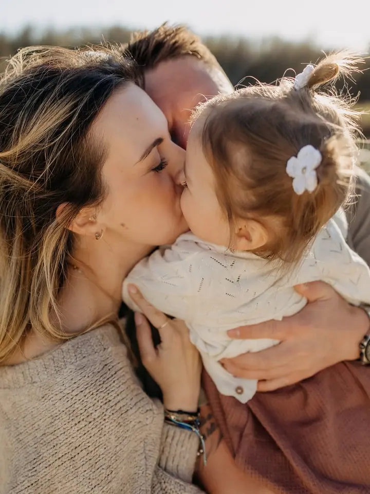
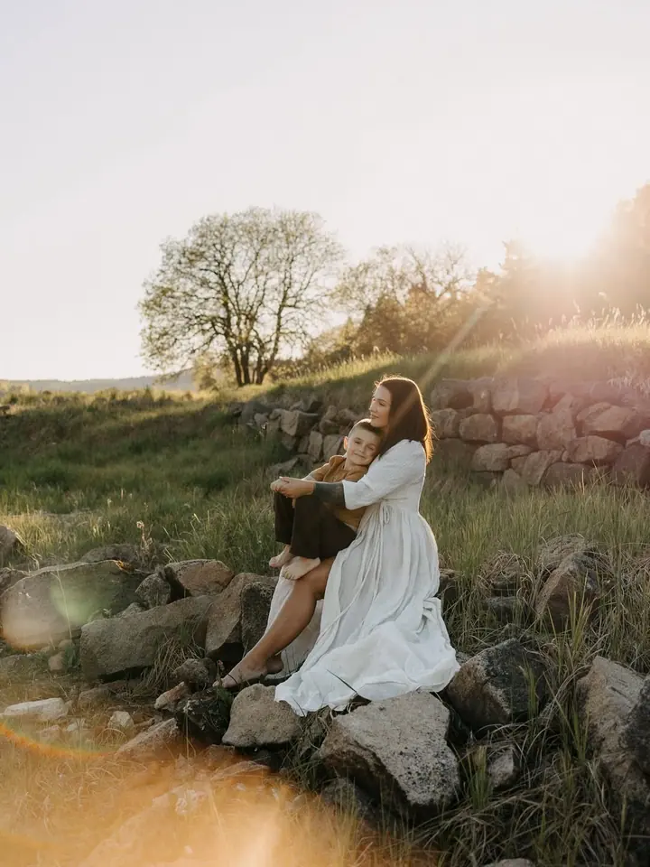
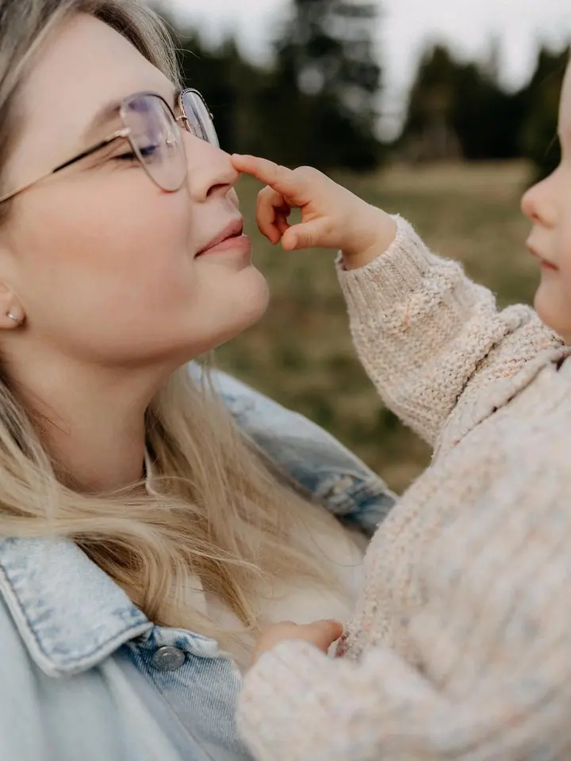

Newborn a Fresh 48
Lifestyle focení novorozeného miminka v klidu vašeho domova, bez přehnané stylizace a s krátkým videem z prvních společných chvil. Nebo reportážní focení Fresh 48 ještě v porodnici na oddělení šestinedělí.

Jmenuji se Martina Běhavá a fotím rodiny, novorozená miminka a maminky v očekávání v Mostě a okolí. Fotím přirozeně u vás doma nebo venku, nejraději při západu slunce.
Rezervovat termínJsem fotografka z Mostu a fotím rodiny, miminka, těhulky a páry, občas i svatby. Na webu a na Instagramu mě najdete i pod jménem Martina Vysloužilová. Nejčastěji fotím venku na svých oblíbených místech, která pořád objevuji, nebo přijedu za vámi domů.


U novorozenců nedělám přespříliš stylizované fotky. Chci zachytit atmosféru, něžnost a lásku, kterou miminko přinese do vašeho života, a to jde nejlépe v klidu vašeho domova. Když chcete, přijdu za vámi už do porodnice a vyfotím vám první dny na šestinedělí.
Na focení nemusíte nic umět. Projdeme se, přidáme nějakou aktivitu a pár srandiček, a než se nadějete, je hotovo. Stopky nezapínám, fotíme, dokud nemáme to, proč jste přišli.
Co fotím
Lifestyle focení novorozeného miminka v klidu vašeho domova, bez přehnané stylizace a s krátkým videem z prvních společných chvil. Nebo reportážní focení Fresh 48 ještě v porodnici na oddělení šestinedělí.
Přirozené focení venku na mých oblíbených místech nebo u vás doma. Nejraději fotím před západem slunce nebo při něm a stopky přitom nezapínám.
Focení bříška pro vás dva nebo i se staršími sourozenci, venku v měkkém večerním světle nebo v interiéru. K focení si můžete přikoupit krátké video.
Fotím celý svatební den nebo jen jeho část. Ceník pro rok 2026 vám ráda pošlu e-mailem, stačí mi napsat datum, místo obřadu a co si představujete.
Postup
Ozvěte se přes formulář na webu, na Instagramu nebo na Facebooku. Napište, o jaké focení máte zájem, a vše, co mi pomůže představit si, jak by mělo vypadat.
Domluvíme místo a čas, venku ideálně před západem slunce. Ráda vám poradím s oblečením, nejlépe jednobarevným, v zemitých tónech a ladícím tón v tónu.
Focení trvá většinou kolem hodinky, u newborn focení zhruba hodinu a půl. Bez stresu a bez stopek, děti mají prostor být samy sebou.
Náhledy vám pošlu do 2 týdnů a vy si vyberete fotky k úpravě. Hotové fotky dostanete v online galerii, u některých balíčků i vyvolané.
Otázky
Nejčastěji fotím venku na svých oblíbených místech nebo u vás doma. Venku fotím nejraději před západem slunce nebo při něm, proto s malými dětmi doporučuji jaro nebo podzim, kdy slunce zapadá v rozumnou dobu.
Toho se nebojte. Projdeme se, přidáme nějakou aktivitu a pár srandiček a já si vše potřebné ulovím. Ani se nenadějete a bude po focení.
Ideální je jednobarevné oblečení, venku v přírodních zemitých barvách, doma ve světlých tónech. Ladit se do sebe tón v tónu je lepší než mít stejné outfity. Vynechte neonové barvy, velká loga a nápisy. Když si nejste jistí, ráda poradím.
Náhledy posílám do 2 týdnů od focení, hotové fotky také do 2 týdnů od vašeho výběru. Newborn fotky obvykle do 3 týdnů. Lhůty jsou orientační, u svateb je domlouváme na předsvatební schůzce.
Ano, k rodinnému, párovému i těhotenskému focení si můžete dokoupit krátké video, zhruba 1 až 3 minuty. Domluvte se se mnou ideálně už při objednání termínu. U newborn a Fresh 48 je video součástí balíčku.